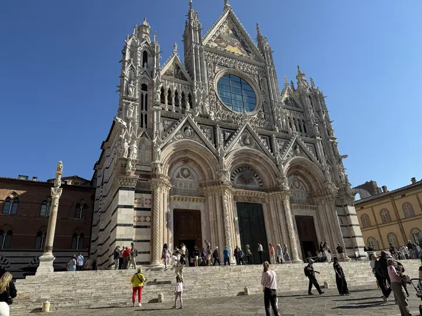
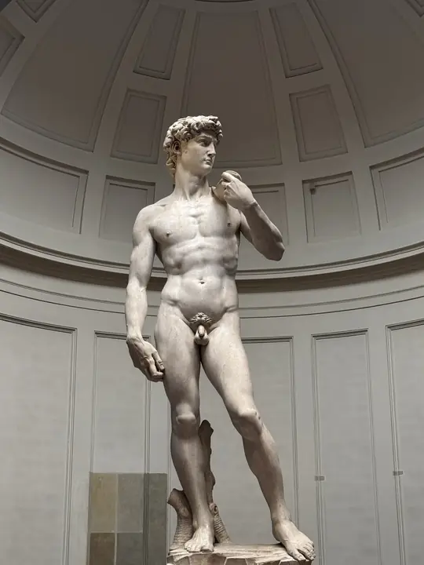
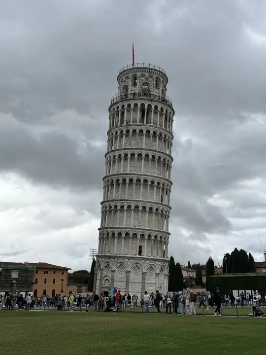
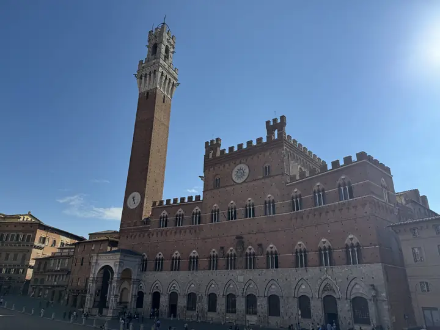

Stufenfahrt Hans-Jonas-Gesamtschule · 04.–10.10.2026
Willkommen zurück in Mönchengladbach
Fahrt beendet
Angekommen Sa 00:22




RückblickToskana WrappedEure Fahrt in 2 Minuten: Kilometer, Stau, Gotthard und Fotos
Ansehen →Die Fahrt in Zahlen
2.841km im Bus, mit Ausflügen
34:55Stunden Hin- und Rückfahrt
3Länder: Deutschland, Schweiz, Italien
2×durch den Gotthard, 33,8 km Tunnel
212Minuten Stau und Stop-and-go
12Raststätten-Pausen, 1 Fahrerwechsel
Hinfahrt
So 22:43 → Mo 15:16
- Dauer16:33 h
- Streckeca. 1.231 km
- WegBasel · Gotthard · La Spezia
Rückfahrt
Fr 06:00 → Sa 00:22
- Dauer18:22 h
- Streckeca. 1.255 km
- Längste PauseHunsrück, 46 Min
Unsere Woche
MO
05
05
Montecatini Alto
Ankunft, Zimmer, und gleich den Berg hoch
DI
06
06
Siena
Piazza del Campo, Dom und ganz viele Stufen
MI
07
07
Firenze
Zug ab Prato, David, Ponte Vecchio, Dom
DO
08
08
Pisa & Lucca
Schiefer Turm, dann Lucca statt Meer (Gewitter)
FR
09
09
Heimfahrt
Um 06:00 los, kurz nach Mitternacht zuhause
Danke an Micha und alle Fahrer, an die Lehrkräfte und an euch alle.
Arrivederci, Toscana.
Der Live-Standort ist abgeschaltet. Es werden keine Positionen mehr gesammelt und keine Benachrichtigungen mehr verschickt. Kilometer sind aus der GPS-Spur geschätzt, Ausflüge aus dem Wochenplan.